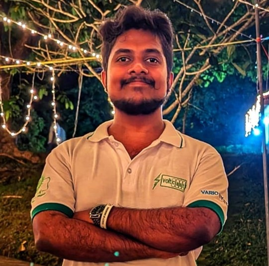

I am a dedicated Computer Engineering undergraduate at the University of Ruhuna - Faculty of Engineering under Department of Electrical & Information Engineering, where I am honing my skills and knowledge in various disciplines. Recognized by my peers as a natural leader, I possess the ability to swiftly adapt to challenges and lead by example. Equally adept at being a team player, I deeply value collaboration and believe in respecting and supporting leadership decisions while contributing innovative ideas for improvement. As a versatile individual, I thrive on balancing multiple priorities and continuously seek out new opportunities for growth and learning.